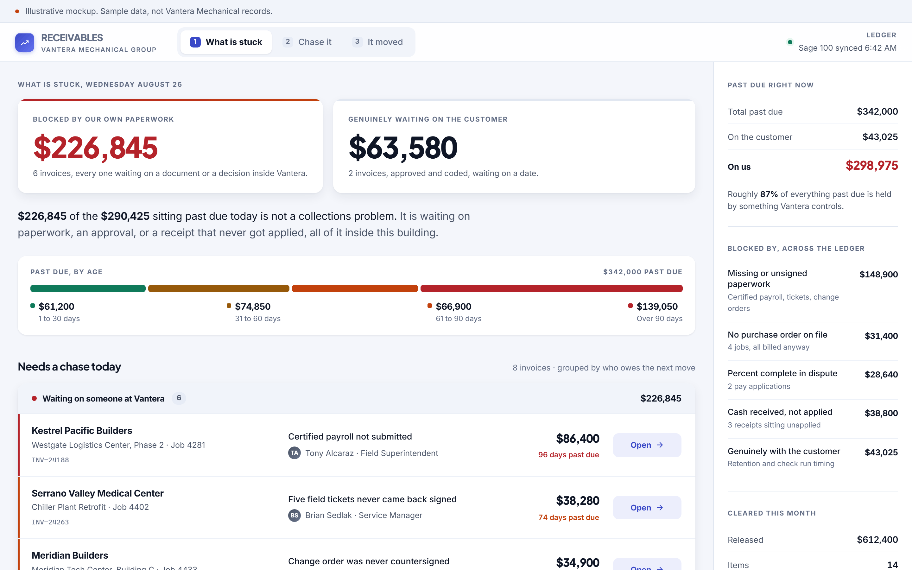

Example: Commercial mechanical contractor
The aged receivable is mostly our own paperwork
87%
of everything past due was held by the contractor's own paperwork, not by customers refusing to pay
Most of what sits past ninety days is not a customer refusing to pay. It is a document nobody inside the building has produced yet.